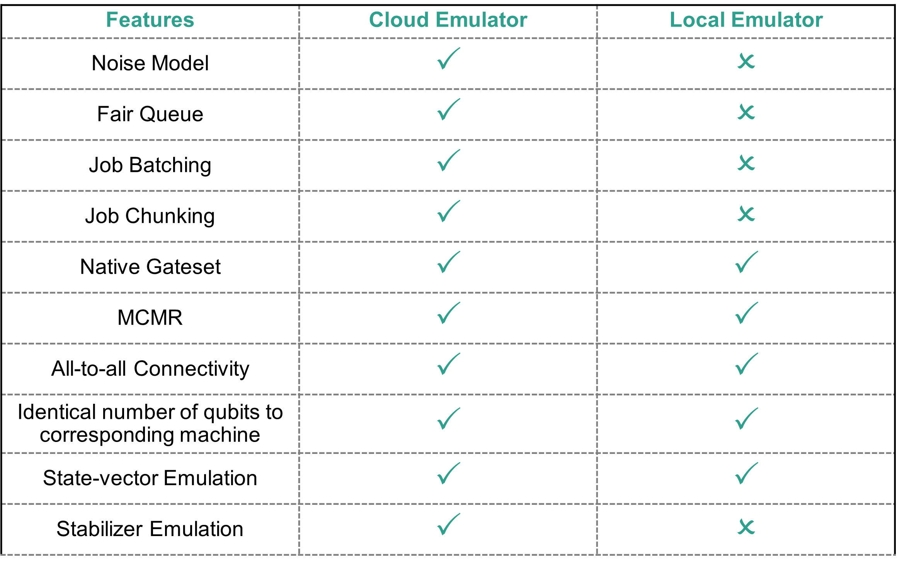

pytket-quantinuum¶
Please note that the platform pytket-quantinuum serves is being replaced by Quantinuum Nexus and will be deprecated March 31, 2025. Please use https://nexus.quantinuum.com/ with existing credentials to submit jobs and manage users. Users should start migrating to utilizing Nexus and refer to Nexus examples. Users may continue to submit job via pytket-quantinuum, and the Nexus User Portal will provide visibility on those jobs.
For any questions migrating examples, please reach out to QCsupport@quantinuum.com.
pytket-quantinuum is a python client enabling access to Quantinuum Systems. This is an alternative job submission tool to qnexus, the python client to Quantinuum Nexus. The API reference for pytket-quantinuum is available here. pytket-quantinuum requires a TKET circuit or a collection of TKET circuits as input. Client-side compilation functions enable automated conversion to the Quantinuum native gateset. pytket-quantinuum submits the user’s circuit as QIR to the specified Quantinuum resource for execution.
{kind=link}
The table below specifies the features available with pytket-quantinuum in comparison to qnexus. Compared to qnexus, automated job management and monitoring support is not provided. Additionally, pytket-quantinuum users are responsible for management of job resources. qnexus provides automated storage and visibility of job resources.
{kind=link}
Installation¶
pytket-quantinuum can be installed using pip from the public PyPI index.
pip install pytket-quantinuum
A local noiseless Quantinuum emulator can be installed with the pecos extra-install-argument.
pip install pytket-quantinuum[pecos]
Authentication¶
Requirements:
You must a verified Quantinuum account
You must have accepted the latest terms and conditions which can only be done by logging into the Quantinuum User Portal.
Process:
There are two ways to login. The option you choose depends on how you set up your account during registration. If you set up your account by registering your email address directly, use Option 1. If you utilized Microsoft credentials to login, use Option 2.
Login¶
If you already have a verified user portal account you will be asked to provide your credentials after initializing the QuantinuumBackend interface. If you opted to set up a native account during your user registration we recommend you use this approach.
Prompt 1:
Enter your email:Prompt 2:
Enter your password:
If you opted to set up Multi-factor Authentication (MFA), you will also be required to provide a verification code. This code automatically refreshes every 30 seconds and can be found on the authenticator app used to setup MFA on your account. The interface does not change when MFA is setup. To enable MFA navigate to the Account tab in the user view on the user portal. MFA is not available for users logging in through a Microsoft account.
Prompt 3:
Enter your MFA verification code:
from pytket.extensions.quantinuum import QuantinuumBackend
machine = "H1-2E" # Substitute any Quantinuum target
backend = QuantinuumBackend(device_name=machine)
backend.login()
Login via Microsoft¶
If you would like to login using a Microsoft account you’ll need to set the provider flag to Microsoft when initializing QuantinuumBackend. If you signed up with a Microsoft account during your user registration, you will be required to use this approach.
Instead of being prompted for your email and password, you will be prompted with this message:
To sign in:
1) Open a web browser (using any device)
2) Visit https://microsoft.com/devicelogin
3) Enter code #########
4) Enter your Microsoft credentials
As the prompt suggests, you’ll need to open this link and enter the provided device code to complete your authentication with Microsoft. The Quantinuum API will wait (at most 15 minutes) for these steps to be completed.
Once authenticated, Quantinuum will verify the federated login request and attempt to issue tokens.
from pytket.extensions.quantinuum import QuantinuumBackend
machine = "H1-1E" # Substitute any Quantinuum target
backend = QuantinuumBackend(device_name=machine, provider="Microsoft")
backend.login()
To sign in:
Open a web browser (using any device)
Visit https://microsoft.com/devicelogin
Enter code ‘*******’
Enter your Microsoft credentials
Additional Notes
If Multi-factor Authentication (MFA) is enabled on your account you will also be required to approve this login request.
If you don’t have access to a web browser you can use another device that does such as a phone or another computer to complete this step.
If you receive these error messages:
Unable to complete federated authenticationorProvider token is invalid, please check that you are using the same Microsoft account you set up during your registration.
QuantinuumBackend¶
QuantinuumBackend is initialized in the cell and targets the H1-1E emulator. Once the object is constructed the user must login.
from pytket.extensions.quantinuum import QuantinuumBackend
backend = QuantinuumBackend(device_name="H1-1E")
backend.login()
The Quantinuum targets available to the end-user are visible below.
targets = [x.device_name for x in QuantinuumBackend.available_devices()]
targets[-5:]
QuantinuumBackend also provides property visiblity of the specified Quantinuum target.
print(backend.backend_info.to_dict())
Job Workflow¶
Program Construction¶
from pytket.circuit import Circuit
circuit = Circuit(2, name="Bell State")
circuit.H(0)
circuit.CX(0, 1)
circuit.measure_all()
Local Compilation¶
Circuits submitted to Quantinuum Systems are automatically run through TKET compilation passes. This enables circuits to be automatically optimized and run more efficiently.
When using pytket before submitting to hardware, the get_compiled_circuit function performs the same compilation passes run after submission to Quantinuum Systems. Local compilation enables end users to:
visualize circuit before submission to hardware,
and to determine if a different optimization level is desired.
The circuit to be submitted to hardware must satisfy a gate set predicate. This check is performed internally within pytket-quantinuum. The get_compiled_circuit (get_compiled_circuits) instance method rewrites the circuit for submission in the native gate set. More information on the specific compilation passes applied can be found on the pytket-quantinuum documentation, specifically the Default Compilation section.
compiled_circuit = backend.get_compiled_circuit(circuit, optimisation_level=0)
Circuit compilation with optimization level 2. The default compilation setting for circuits submitted to Quantinuum Systems is optimization level 2.
compiled_circuit = backend.get_compiled_circuit(circuit, optimisation_level=2)
Costing Jobs¶
User can calculate the cost of executing jobs on Quantinuum Systems. The syntax checker corresponding to the hardware or emulator target must be specified as a kwarg on QuantinuumBackend.cost. The user must specify the compiled circuit for costing, since the QuantinuumBackend.cost function requires the circuit use native Quantinuum gate operations. For a list of circuits, each circuit must be passed individually to the costing function. For information on offline job costing, please see here.
n_shots = 100
backend.cost(compiled_circuit, n_shots=n_shots, syntax_checker="H1-1SC")
Execute Job Submission¶
The compiled circuit can be submitted to Quantinuum hardware and emulators for execution using QuantinuumBackend.process_circuit (QuantinuumBackend.process_circuits). The output is a ResultHandle, a reference to the submitted job, and is required to request the job result when available. For a list of circuits submitted using QuantinuumBackend.process_circuits, a list of ResultHandle instances are returned.
The ResultHandle instance should be converted to a string and saved. It can be reloaded using ResultHandle.from_str.
handle = backend.process_circuit(compiled_circuit, n_shots=n_shots)
import json
with open("pytket_example_job_handle.json", "w") as file:
json.dump(str(handle), file)
from pytket.backends import ResultHandle
with open("pytket_example_job_handle.json") as file:
handle_str = json.load(file)
handle = ResultHandle.from_str(handle_str)
result = backend.get_result(handle)
The status of a submitted job can be viewed at any time, indicating if a job is in the queue or completed. Additional information is also provided, such as queue position, start times, completion time, and circuit cost in Hardware Quantum Credits (HQCs).
status = backend.circuit_status(handle)
print(status)
Job Result¶
QuantinuumBackend.get_result enables users to request job results when available. A BackendResult instance is returned. The BackendResult.get_counts function will return the measurement distribution as dictionary of bitstrings and occurances (Dict[Tuple[int, ...], int]).
result = backend.get_result(handle)
print(result.get_counts())
Partial Job Results¶
For large jobs, there is also the ability to return partial results for unfinished jobs using QuantinuumBackend.get_partial_result. There are two primary benefits to partial results:
Diagnose potential faults with submitted jobs. Users can cancel running jobs if the partial results quality does not satisfy expectations or if the time to solution of the job appears longer than expected, saving HQC consumption.
Enable users to quickly validate basic execution for very large jobs, which may otherwise take hours or days to complete.
partial_result, job_status = backend.get_partial_result(handle)
print(partial_result.get_counts())
Cancel Execute Jobs¶
Jobs that have been submitted can also be cancelled with QuantinuumBackend.cancel.
backend.cancel(handle)
Batching¶
Note
For execute job batching with Nexus, see Job Batching.
The batch feature enables users to benefit from “ad-hoc” reservations. Circuits submitted together in a batch will run at one time. Once a batch hits the front of the queue, jobs in a batch will run uninterrupted until they are completed. Hence, chunks from other organizations’ jobs will not contaminate chunks in a batch.
Job batching constraints:
Currently only the quantum computer and emulator targets support the batching feature. Batching is not supported on the syntax checkers.
A user specifies the current job submission is the last job in the batch
1 minute of inactivity
The total job cost in the batch exceeds 2,000 HQCs.
If the total HQCs for jobs in a batch hit this limit, those jobs will run as regular jobs in the queue instead of as a batch.
End-users can specify a smaller max batch cost.
Batch Initiation:
To start a batch, use the QuantinuumBackend.start_batch function, specifying the kwarg max_batch_cost to enforce the HQC hard limit for the job batching session. Similar to QuantinuumBackend.process_circuit, the compiled circuit and the shot number must be specified as function arguments. A ResultHandle instance is returned by QuantinuumBackend.start_batch, and is required input to continue adding circuits to the batch.
Batch Continuation:
Circuits must be added to the batch iteratively with QuantinuumBackend.add_to_batch. Each new circuit corresponds to a new QuantinuumBackend.add_to_batch function call. QuantinuumBackend.add_to_batch requires the ResultHandle of the job submitted to the batch, the compiled circuit to add to the batch and an integer number of shots.
Batch Termination:
A batch can be ended by either 1 minute of inactivity, or specifying batch_end as True in the last QuantinuumBackend.add_to_batch function call.
n_shots = 10
max_batch_cost = 100
batch_handles = []
batch1 = backend.start_batch(
max_batch_cost=max_batch_cost, circuit=compiled_circuit, n_shots=n_shots
)
for i in range(3):
handle = backend.add_to_batch(batch1, compiled_circuit, n_shots=(i+1)*n_shots)
backend.add_to_batch(batch1, compiled_circuit, n_shots=(i+1)*n_shots, batch_end=True)
Emulators¶
Note
For Nexus access and usage of emulator resource, see Quantinuum Emulators.
An emulator can be used to get an idea of what a quantum device will output for a given quantum circuit. This enables circuit debugging and optimization before running on a physical machine. Emulators differ from simulators in that they model the physical and noise model of the device whereas simulators may model noise parameters, but not physical parameters.
The Quantinuum emulators run on a physical noise model of the Quantinuum hardware. All quantinuum hardware have cloud emulators (suffix E) and local emulators (suffix LE). There are various noise/error parameters modeled. There are cloud emulators and local emulators available for consumption in user workstreams.
State vector Emulator: The default mode of all emulators. The emulator will compute the state vector of the circuit and estimate the measurement distribution from that state vector. (option:
state-vector)Stabilizer Emulator: Use of the emulator for circuits involving only Clifford operations. This is only available on cloud emulators (option:
stabilizer)Noiseless Emulation: Disable the noise model for state vector and stabilizer emulators. Only shot noise is present in the emulation result. The
pytket-pecospackage enables noiseless (state-vector) emulation locally. The Cloud emulators enable noiseless emulation by settingerror-modeltoFalse.Noise Model Customization: Experiment with the noise parameters in the emulator. There is no guarantee that results achieved changing these parameters will represent outputs from the actual quantum computer represented. This is only available for the cloud emulators.
{kind=link}
Users can access cloud emulators with their Quantinuum credentials over the cloud via the Fair Queue. These emulators are hosted on Quantinuum’s infrastructure, consume HQCs upon usage, are available 24/7, and replicate Quantinuum hardware and noise characteristics unless the user utilizes the noise model options. Cloud emulators are accessible via pytket-quantinuum. Jobs submitted to the cloud emulator with a high shot count are automatically chunked into multiple partitions with fewer shots. This enables an incremental distribution of emulator resources.
User can also access local emulators. Local emulators do not consume HQCs and only provide noiseless emulation modeling physical characteristics like transport, but not noise. Only state-vector simulation is available for local emulators. The user does not need to submit jobs to a Fair queue. Local emulators are accessible via pytket-pecos and pytket-quantinuum.
Emulator run-time is dependent on the number of qubits and number of operations in the job. Noisy emulations are slower than noiseless emulations. For smaller noiseless emulations involving less than 16 qubits, it is recommended to use the local emulators. For larger emulations, or emulations using a noise model, cloud emulators is recommended.
Local and Cloud Emulators¶
{kind=link}
To access cloud emulators, QuantinuumBackend construction is identical to hardware access, however the target name must contain the E suffix.
from pytket.extensions.quantinuum import QuantinuumBackend
backend_emulator = QuantinuumBackend("H1-1E")
backend.login()
Local Quantinuum emulators contain the LE suffix. Local emulators still require authentication unless the offline API is specified during QuantinuumBackend construction. The local emulator can be installed with the pecos extra-install argument, as specified in Installation.
from pytket.extensions.quantinuum import QuantinuumBackend
backend_emulator = QuantinuumBackend("H1-1LE")
backend.login()
Emulation Modes¶
There are two types of simulation methods, state-vector and stabilizer. These can be specified during construction of QuantinuumBackend via the simulator keyword argument. The default value is state-vector. Emulator targets with the LE suffix only support state-vector emulation.
{kind=link}
backend = QuantinuumBackend(device_name="H1-1", simulator="state-vector")
If the quantum operations are all Clifford gates, it is faster to use the stabilizer emulator. The stabilizer emulator is requested in the setup of the QuantinuumBackend with the simulator input option. This option can only be used with cloud emulators.
backend = QuantinuumBackend(device_name="H1-1", simulator="stabilizer")
Native Quantinuum Gates¶
The set of native Quantinuum gate operations can be found in system operation. The QuantinuumBackend function set_compilation_config_target_2qb_gate is used to specify the desired 2-qubit gate operation to use. The options are OpType.ZZMax, OpType.ZZPhase and OpType.TK2. Only 1 specific type of 2-qubit gate can be consumed on a per circuit basis. The code samples below show direct usage of native gate operations. Required modification of the QuantinuumBackend instance is shown as needed. The standard workflow enables circuit compilation and submission to desired machine or emulator target, as shown in pytket-quantinuum job workflow.
The following capability is demonstrated with qnexus in Mid-circuit Measurement & Reset.
from pytket.circuit import Circuit
circ = Circuit(2, 2)
circuit.H(0).CX(0, 1)
circuit.Measure(0, 0).Reset(0)
circuit.CX(0, 1).H(0)
circuit.Measure(0, 1)
The following capability is demonstrated with qnexus in Parameterized ZZ Operation.
from pytket.circuit import Circuit
circ = Circuit(2)
circuit.H(0).V(1)
circuit.ZZPhase(-0.1117865, 0, 1)
circuit.H(0).Vdg(1)
circuit.measure_all()
The following capability is demonstrated with qnexus in General SU(4) Entangling Operation.
from pytket.circuit import Circuit, OpType
backend.set_compilation_config_target_2qb_gate(OpType.TK2)
circ = Circuit(2).X(1)
circ.TK2(-0.03, 0.01, 0.111)
circuit.measure_all()
The following circuit peforms a logical XOR operation on two bit registers (a and b) and stores the result in a third bit register, c.
circuit = Circuit(name="Conditional Example")
qreg = circuit.add_q_register("q", 1)
reg_a = circuit.add_c_register("a", 10)
reg_b = circuit.add_c_register("b", 10)
reg_c = circuit.add_c_register("c", 10)
circuit.add_c_setreg(2, reg_a) # a = 2
circuit.add_c_setreg(3, reg_b) # b = 3
circuit.add_clexpr_from_logicexp(reg_a ^ reg_b, reg_c) # c = a ^ b
A Optype.X operation conditioned on a MCMR result stored in a classical bit.
from pytket.circuit import Circuit
circ = Circuit(2, 2)
circuit.H(0).CX(0, 1)
circuit.Measure(0, 0).Reset(0)
circ.X(0, condition=if_bit(0))
circuit.CX(0, 1).H(0)
circuit.Measure(0, 1)
Quantinuum API Options¶
Note
For a list of API options that can be specified in submission workflows, please see Quantinuum API Options.
Default API Options (pytket-quantinuum Users)¶
pytket-quantinuum uses default values for the Quantinuum API options specified below. The cloud emulator defaults to simulation mode state-vetor. The API option, noreduce, prevents further modification to the 2-qubit gate type used in the user’s program. The default API options no-opt and tket-opt-level prevents additional server-side TKET optimization.
API Option |
Value Type |
Default Value |
simulator |
str |
state-vector |
no-opt |
bool |
True |
noreduce |
bool |
True |
tket-opt-level |
bool |
None |
Compiler Options¶
Compiler options specified in Quantinuum API Options, can be passed to the QuantinuumBackend instance using the two pathways. The API options specify server-side tket optimization with level 2 and the native 2-qubit gate as parameterized \(ZZ\) gate for job execution. Circuits submitted for server-side TKET optimization must only use the native Quantinuum gateset.
options = {
"tket-opt-level": 2,
"no-opt": False,
"nativetq": "ZZ"
}
backend = QuantinuumBackend(device_name="H1-1E", options=options)
The options dictionary can be specified as a kwarg with QuantinuumBackend.process_circuit (QuantinuumBackend.process_circuits). This will override any API options specified in the QuantinuumBackend constructor.
from pytket.circuit import Circuit
from pytket.extensions.quantinuum import QuantinuumBackend
backend = QuantinuumBackend(device_name="H1-1E")
circuit = Circuit(2)
circuit.PhasedX(0.25, 0.125, 0)
circuit.ZZMax(0, 1).Rz(-0.111, 1)
circuit.ZZMax(0, 1).Rz(-0.111, 0)
circuit.measure_all()
job_handle = backend.process_circuit(circuit, n_shots=100, options=options)
Emulator Noise Model Customizaton¶
The emulator runs with default error parameters that represent a noise environment similar to the physical devices. More information on the error model is available in the emulator user guide. Two API options must be specified to enable noise model customization:
error-model: A boolean to specify if the error model should be enabled (True) or disabled (False). By default the error model is enabled.error-params: If the error model is enabled, a nested dictionary is provided containing the error model parameters to tweak.
from pytket.extensions.quantinuum import QuantinuumBackend
options = {"error-model": True, "error-params": {"quadratic_dephasing_rate": 0.1}}
backend = QuantinuumBackend(
device_name="H1-1E",
options=options
)
options = {"error-model": True, "error-params": {"p2": 0.4}}
backend.process_circuits(circuit, n_shots=100, options=options)
QuantinuumBackend
Offline Usage¶
Offline Compilation¶
pytket-quantinuum offers users “offline compilation”. This allows users to perform client-side compilation without user authentication. This is useful when network issues or authentication errors impact user workflows.
Offline compilation is enabled during QuantinuumBackend construction by:
Setting the
api_handlerkwarg equal to an instance ofpytket.extensions.quantinuum.QuantinuumAPIOffline.Specifying
machine_debugas True
from pytket.extensions.quantinuum import QuantinuumAPIOffline
backend_offline = QuantinuumBackend(
device_name="H1-1E",
machine_debug=True,
api_handler=QuantinuumAPIOffline()
)
compiled_circuit = backend_offline.get_compiled_circuit(circuit, optimisation_level=2)
The offline QuantinuumBackend instance also provides visbility on the static Quantinuum gateset definition.
backend_offline._gate_set
Offline Job Costing¶
Circuits can be costed locally using the h1_cost function. The output of the h1_cost function is a float specifying number of HQCs. The circuit to be costed must be defined or compiled to the native Quantinuum gateset (LINK).
from pytket.circuit import Circuit, OpType
def h1_cost(
circuit: Circuit,
n_shots: int
) -> float:
r"""Computes the required number of hardware
quantum credits to run a job. Returns a float
specifying required number of HQCs.
Args:
job_resource (JobResource): Contains various
statistics needed to compute job cost.
n_shots (int): Number of shots to be used
with each job
Returns:
float
"""
n1 = circuit.n_1qb_gates()
n2 = circuit.n_2qb_gates()
m = circuit.n_gates_of_type(OpType.Measure)
return 5 + (n_shots/5000) * (n1 + 10 * n2 + 5 * m)
The circuit defined below contains native Quantinuum gates in addition to MCMR.
import numpy as np
from pytket.circuit import Circuit
circuit = Circuit(2)
mreg = circuit.add_c_register("m", 18)
for i in range(10):
angles = np.random.random_sample(size=4) / 4
circuit.Rz(angles[0], 0)
circuit.ZZPhase(angles[1], 0, 1)
circuit.PhasedX(angles[2], angles[3], 1)
if i != 9:
circuit.Measure(circuit.qubits[0], mreg[2*i]).Reset(circuit.qubits[0])
circuit.Measure(circuit.qubits[1], mreg[2*i + 1]).Reset(circuit.qubits[1])
circuit.PhasedX(1, 0, 0)
circuit.measure_all()
hqc_cost = h1_cost(circuit, 10)
print(f"{hqc_cost} HQC")
Wasm Support¶
Note
For information on Wasm generation and consumption for QEC decoding, please the QEC Decoder Toolkit.
Wasm (Web Assembly) is a unit of classical compute resource consumed by quantum circuits. It is used to define and call custom QEC decoders during real-time execution of a quantum circuit. There are three main differences consuming and submitting Wasm with pytket-quantinuum compared to qnexus:
WasmFileHandler(pytket-quantinuum) is required instead ofWasmModuleHandler(qnexus).QuantinuumBackend.process_circuitswith the kwargwasm_file_handleris used to submit theWasmFileHandlerto Quantinuum Systems.pytket-quantinuumusers do not benefit from automatic Wasm resource management.
pytket-quantinuum requires the WasmFileHandler object be used as opposed to the WasmModuleHandler (qnexus). The WasmFileHandler and the WasmModuleHandler. The WasmFileHandler can be constructed by passing the path to the Wasm binary with the decoding functions.
wasm_file_handler = backend.process_circuit(
compiled_circuit,
n_shots=100,
wasm_file_handler=wasm_file_handler_instance
)
A compiled circuit (with Wasm calls) can be submitted alongside the WasmFileHandler instance and an integer shot number using QuantinuumBackend.process_circuits. The WasmFileHandler instance to submit is specified by the wasm_file_handler kwarg on QuantinuumBackend.process_circuits.
handle = backend.process_circuit(
compiled_circuit,
n_shots=100,
wasm_file_handler=wasm_file_handler_instance
)
Job Management Best Practices¶
It is recommended to save the all job data, including inputs (circuits, shot numbers, wasm binaries), outputs (BackendResult) and job references (ResultHandle) to disk.
A Quantinuum job submission with pytket-quantinuum involves:
circuit building
client-side compilation to the Quantinuum gate-set
submission of the circuit to Quantinuum.
retrieval of job results.
Completion of step 3 returns a ResultHandle instance. This ResultHandle instance is required to complete step 4.
It is recommended to save the ResultHandle data to disk after step 3 is completed and reload from disk before step 4. Storing job data to disk is essential for user workflows partitioned across multiple python sessions.
Save ResultHandle instance to local disk
import json
with open("result_handle.json", "w") as file:
json.dump(str(handle), file)
Reload ResultHandle instance into Python Session
from pytket.backends import ResultHandle
with open("result_handle.json", "r") as file:
handle_str = json.load(file)
handle = ResultHandle.from_str(handle_str)
result = backend.get_result(handle)
Save Circuit instance to local disk
import json
with open("circuit.json", "w") as file:
json.dump(circuit.to_dict(), file)
Reload Circuit instance into Python Session
import json
from pytket.circuit import Circuit
with open("circuit.json", "r") as file:
circuit_dict = json.load(file)
circuit = Circuit.from_dict(circuit_dict)
Save BackendResult instance to local disk
import json
with open("result.json", "w") as file:
json.dump(backend_result.to_dict(), file)
Reload BackendResult instance into Python Session
import json
from pytket.backends.backendresult import BackendResult
with open("result.json", "r") as file:
result_dict = json.load(file)
circuit = BackendResult.from_dict(result_dict)
API Reference¶
The API reference for pytket-quantinuum is available here.